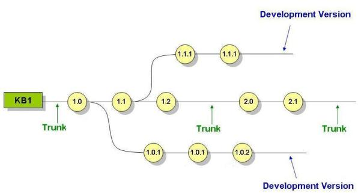

Trunk is the name used in Software Configuration Management (SCM) to identify a special branch corresponding to the root of the version tree. It is actually the development path, where major application development (evolution) takes place. Other branches might be created to maintain parallel development threads. These are called Development Versions.  Fig.1 TrunkSee alsoWhat is a Frozen Version?, What is a Development Version?
|
| Backlinks | |
| Defining versions for each application release | Category:Knowledge Base Preferences |
| Setting a Development Version as Active | What is a Development Version? |